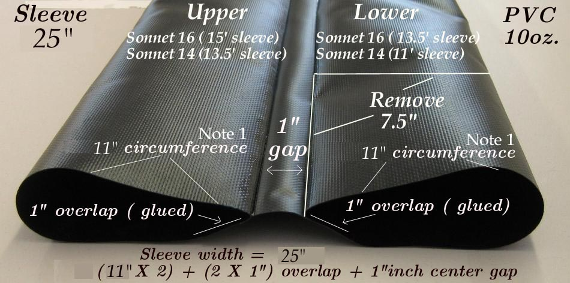

| Sonnet ( Sleeves) | Menu Previous Page Next Page |
|

The 4 sponsons are housed in 2 sponson sleeves made from 10oz. PVC. The sleeves will be later glued to the inside of the hull skin during construction. The sleeve dimensions are computed based on the circumference of the sponsons being used. The sleeve dimensions are given in the drawing above. 1/4" (6.4mm) is added to each sponson's circumference ( 10.5" / 267mm) to allow complete inflation. An additional 1" (25.4mm) per sponson is added for the overlap of the sleeve at the glue seam. This "inside" glue seam will not seperate when the sponson is inflated. The 1" (25.4mm) gap between the sponsons is to allow for the 3/4" (19mm) aluminum side stringers (chines) that fits into this gap when the boat is assembled.
Note 1: Sponson circumference can vary between sponsons, and this must to be considered in determing the size of the sleeves. Before starting the PVC sleeve and PVC skinning process, read and understand the "PVC Skinning Section" of the Folding Kayak Builders Manual. It will discuss the materials and techniques to be used in great detail. The Inflatable / Folding Kayak Builders Manual will only address those skinning procedures that are specific to the Sonnet inflatables. Use the {Back} key to return. |
|